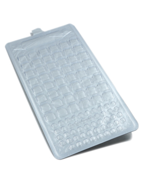

沪公网安备 31011202012026号
沪公网安备 31011202012026号
英文品名：
中文品名：97孔定量盘®
制 造 商：IDEXX
产 地：美国
检测水样：通用水样
检测对象：适用于基于固定底物技术酶底物法的各种试剂
检测内容：定量检测
检测体积：100ml
检测时间：对应基于固定底物技术酶底物法的各种试剂
货号：98-21378-00
规格：100个/箱
保存条件：常温保存
有效期：30个月
 使用方法
使用方法
97孔定量盘®概述
● 无菌包装
● 每批产品提供合格证书
● 通过GB5750-2006《生活饮用水标准检验方法》
● 通过美国环保署EPA认证
● 通过ISO 9308‐2:2012认证，替代多管发酵法作为MPN法
● 与科立得®、Colilert®-18、Colisure®、Enterolert®及Pseudalert®配合使用检测水中总大肠群/
大肠埃希氏菌或粪大肠菌群、肠球菌及绿脓假单胞菌
● 出厂前经过耐压性测试，不会由于压力而造成孔与孔之间的串连、破损影响结果
● 97孔定量盘®无需稀释可检测1-2419MPN/100ml水样，适用于检测污水、地表水、地下水、环境水等
文献资料
 标准认证下载
标准认证下载
1-科立得、51孔定量盘及97孔定量盘通过中国《生活饮用水卫生标准方法》GB5750-2006
2-科立得及定量盘法通过中国农业部标准用于检测畜禽饮用水 NY1665-2008
4-Colilert-18,51孔定量盘通过捷克共和国饮用水及瓶装水认证（英文版-2004年）
5-Colilert-18,51孔定量盘通过立陶宛饮用水认证（英文版-2011年）
6-Colilert-18,51孔定量盘通过波斯尼亚-黑塞戈维亚用于检测饮用水认证（英文版-2012年）
7-Colilert-18定量盘法通过法国标准协会（AFNOR）用于检测饮用水认证（英文版-2009年）
8-固定底物（DST）酶底物法通过西班牙饮用水认证（英文版-2009年）
9-Colilert-18、51孔定量盘及97孔定量盘通过芬兰国家用于检测内陆水域检测（英文版-2008年）
10-科立得及51孔定量盘通过爱尔兰国家标准（英文版-2000年）
11-Enterolert-DW及51孔定量盘通过DWI用于检测饮用水中肠球菌（英文版-2011年）
12-Colilert-18定量盘法取代多管发酵法作为ISO9308-22012标准方法（英文版-2012年）
13-Enterolert-DW及51孔定量盘通过英国环保署分析师协会“蓝皮书”（英文版-2012年）
15-Colilert-18定量盘法获得法国标准协会（AFNOR）颁发的NF认证证书（英文版-2012年）
16-Enterolert-DW定量盘法获得法国标准协会（AFNOR）认证（英文版-2013年）
17-科立得，Colilert-18，Colisure，51孔及97孔定量盘通过牙买加用于检测所有水样类型的认证（英文版-2008年）
18-科立得,Colilert-18,Colisure,51孔及97孔定量盘通过加拿大安大略用于检测饮用水认证（英文版-2008年）
19-Colilert-18,51孔定量盘通过比利时-布鲁塞尔用于检测饮用水认证（英文版-2008年）
20-Colilert-18定量盘法通过丹麦国家标准用于检测饮用水（英文版-2005年）
21-科立得定量盘法通过匈牙利检测饮用水、环境水标准（英文版-2002年）
22-隐孢子虫及大肠埃希氏菌检测项目列入美国EPALT2章程（英文版-2006年）
23-美国俄勒冈州通过科立得检测污水中大肠埃希氏菌的认证（英文版-1996年）
24-Colilert-18定量盘法通过英国饮用水协会认证（英文版-2002年）
25-Colilert-18,51孔定量盘通过希腊饮用水认证（英文版-2010年）
26-水与废水标准检测方法检测大肠菌群-20版（英文版-1998年）
27-Colilert-18定量盘法通过乌克兰国家标准（英文版-2006年）
28-科立得定量盘法用于检测污水和娱乐用水（英文版-1999年）
29-Colilert-18定量盘法通过法国标准协会（AFNOR）认证过程（英文版-2009年）
30-科立得,Colilert-18,Colisure,51孔及97孔定量盘通过“水与废水标准检测方法”21版认证（英文版-2005年）
31-Colilert-18,51孔定量盘,Filta-Max两虫淘洗设备通过意大利检测饮用水及泳池水认证（英文版-2007年）
32-Colilert-18,51孔定量盘通过比利时-弗兰德认证（英文版-2008年）
33-Colilert-18,51孔定量盘通过德国饮用水检测（英文版-2002年）
34-科立得,Colilert-18,Colisure,51孔及97孔定量盘通过斯洛伐克水质检测认证（英文版-2007年）
35-科立得,Colilert-18,51孔及97孔定量盘作为澳大利亚检测总大肠菌群和大肠埃希氏方法（英文版-2005年）
36-Colilert-18,51孔及97孔定量盘通过德国检测浴池和温泉用水（英文版-2006年）
37-Colilert-18，Enterolert-E及51孔定量盘通过瑞典检测浴室用水标准（英文版-2008年）
38-英国采用Colilert-18定量盘法检测大肠菌群（英文版-1997年）
39-科立得,Colilert-18,Enterolert,51孔及97孔定量盘通过美国EPA用于检测污水认证（英文版-2007年）
40-科立得，Colilert-18，Enterolert，51孔及97孔定量盘通过美国EPA用于检测环境水的认证（英文版-2003年）
41-美国EPA通过Colilert-18及97孔定量盘认证（英文版-1996年）
42-美国EPA通过Colilert-18与定量盘检测污水中粪大肠菌群（英文版-2011年）
43.Colisure定量盘法通过美国EPA定量检测水样认证（英文版-2001年）
44-Colilert-18,51孔定量盘通过英国DWI认证（英文版-1999年）
45-科立得、Colilert-18、Colisure通过美国FDA检测瓶装水和水源水检测（英文版-2009年）
 技术文献下载
技术文献下载
2-使用Colilert-18检测污水中粪大肠菌群（英文版-2011年）
3-Colilert-18定量盘法与欧盟饮用水方法比较（英文版-2006年）
4-Colilert-18定量盘法与滤膜法比较（英文版-1999年）
5-Colilert-18与97孔定量盘最有效检测淤泥中大肠埃希氏菌的方法（英文版-2004年）
6-Colilert-18，51孔定量盘及97孔定量盘可用于检测污水及污泥中粪大肠菌群（英文版-2003年）
7-科立得与51孔定量盘与滤膜法成本比较（英文版-1997年）
8-科立得定量盘法与滤膜法在检测环境水样比较（英文版-2006年）
9-比较使用Colilert-18定量盘法与方法9222D检测污水中粪大肠菌群（英文版-2011年）
10-Enterolert定量盘法与滤膜法比较（英文版-1996年）